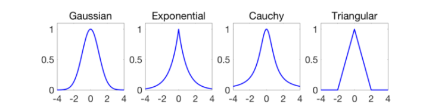
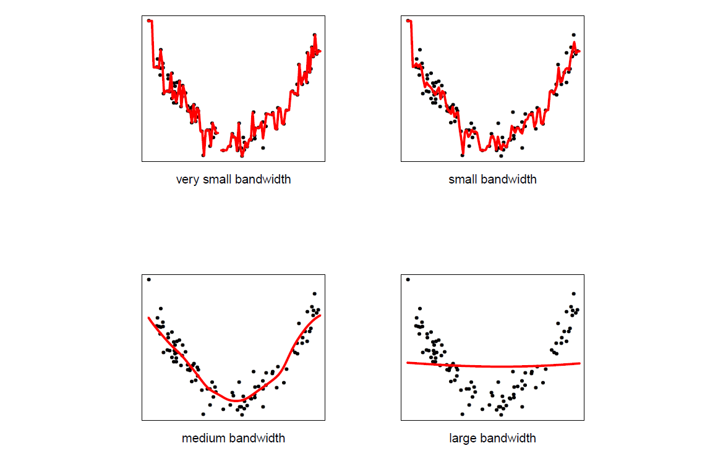
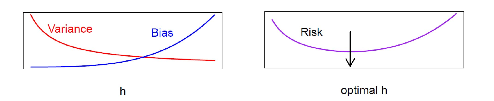
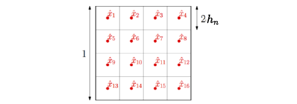

Mercer's Theorem
Given data points $(X_1,Y_1)$ , $(X_2,Y_2)$ , .. , and $(X_n,Y_n)$ where we want to predict $Y$ via design matrix $X$. Let’s say $Y_i=m(X_i)+\epsilon_i$ where $m(x)$ is a smooth function of $x$.
In statistics, the most popular methods to derive $m(x)$ are kernel methods:
- Smoothing kernels
- Mercer kernels
The primary distinction between smoothing and Mercer kernels is that the former employs local averaging, whereas the latter employs regularization.
Smoothing kernel estimator
$$ \hat{m_h}(x) = \frac{\sum_{i=1}^n Y_i K_h(X_i,x)}{\sum_{i=1}^n K_h(X_i,x)} $$
where $K_h(x,z)$ is a kernel such as: 
For example let’s say our kernel is a Gaussian: $$ K_h(x,z) = \exp \Big( -\frac{||x-x||^2}{2h^2} \Big) $$
$\hat{m_h}(x)$ is just a local average of the $Y_i$’s near $x$. Furthermore, the bandwidth $h$ controls the bias-variance tradeoff where smaller $h$ indicates large variance and large $h$ implies large bias.

Risks in smoothing kernels
$$ \text{Risk} = \mathbb{E}[Y-\hat{m_h}(X)]^2 = \text{bias}^2+\text{variance}^2+\sigma^2 $$
Let’s make an assumption on distribution of data:
$$ \begin{aligned} \text{bias}^2 \approx h^4 \\ \text{variance} \approx \frac{1}{nh^p} \end{aligned} $$
where $p=$ dimension of $X$ and $\sigma^2=\mathbb{E}[Y-m(X)]^2$ is the unavoidable prediction error. We can think of this another way: when we set $h$ small bias is low and variance is high implying undersmoothing. On the other hand, when $h$ is large, we are averaging over many surrending points that causes high bias and low variance; this is called oversmoothing.

Thus, we need to find the optimum value for $h$.
Howe we can estimate Risk?
Let’s indicate $\hat{Y_{-i}}=\hat{m}_{h,-i}(X_i)$ the estimation based on all but $X_i$. To estimate risk using cross-validation:
$$ \hat{R}(h) = \frac{1}{n} \sum_{i=1}^n(Y_i-\hat{Y}_{-i})^2 $$
We can show this in a very compact form as follows:
$$ \hat{R}(h) = \frac{1}{n} \sum_{i=1}^n\Big(\frac{Y_i-\hat{Y_i}}{1-L_{ii}}\Big)^2 $$
where $L_{ii} = \frac{K_h(X_i,X_i)}{\sum_{i’=1}^n K_h(X_i,X_{i’})}$. This leads to a big computational savings since it shows us that, to compute leaveone-out cross-validation error, we don’t have to actually ever compute $\hat{Y}_{-i}$. To prove this the following hints would be helpful:
$$ \begin{aligned} \sum_{i’}{K_h(X_i,X_{i’})} = K_h(X_i,X_i) + \sum_{i’\neq i}{K_h(X_i,X_{i’})} \\ Y_i-\hat{Y_i} = Y_i - \frac{\sum_{i’}Y_{i’}K_h(X_{i’},X_i)}{\sum_{i’}K_h(X_{i’},X_i)} \end{aligned} $$
The curse of dimensionality
We can apply the method for any dimmensionality $h$. Yet, it doesn’t work as well.
- The squared bias scales as $h^4$ and the variance scales as $\frac{1}{nh^p}$
- Then, the risk goes down no faster than $n^{-4/(4+p)}$
$$ n^{\frac{4}{4+p}} R(\hat{m}_n,m) > 0 $$
How many data points do we need to make this risk as small as $\epsilon$:
$$ n\geq \Big(\frac{1}{\epsilon}\Big)^{1+p/4} $$
But, why? What does our assumption on distribution of data imply? Let’s consider a very simple example with a uniform distribution of data falling under a squared kernel. Suppose the support of the distribution of inputs is an $l_{\infty}$-ball of radius $\frac{1}{2}$ in dimension $p=2$, then with $h_n=1/8$, in order to have a consistent estimation for each of the $(2h_n)^{-p}$=16 candidate test points $\hat{x_1},..,\hat{x_16}$, the number of points in each of the $m=(2h_n)^{−p}$ balls has to grow unbounded and thus $\frac{n}{m}=n(2h_n)^p$ has to grow unbounded. 
In other words:
$$ \begin{aligned} h_n &\rightarrow 0\\ nh_n^p &\rightarrow + \infty \end{aligned} $$
Therefore, in order to obtain a consistent estimator, the bandwidth of translation-invariant kernels has to go to zero slowly enough, slower than $n^{−1/p}$, and the final estimation error is converging to zero, but slower than $n^{−1/p}$. This is the usual curse of dimensionality.In order to obtain a certain error $\epsilon$, the number of observations has to grow at least as $\epsilon^{-p}$, and thus exponentially in dimension. When the underlying function has weak smoothness properties (here just Lipschitz-continuous), such a dependence in $p$ is provably unavoidable in general (see here for more information).
Mercer’s kernel
Instead of using local smoothing, we can optimize the fit to the data subject to regularization (penalization). For example, let’s say choose $\hat{m}$ to minimize:
$$ \sum_i (Y_i -\hat{m}(X_i))^2 +\lambda \text{penalty}(\hat{m}) $$
Sometimes people call $\text{penalty}(\hat{m})$ roughness penalty. $\lambda$ is the parameter that controls the amount of smoothing.
How do we construct a penalty that measures roughness?
There are two approaches:
- Mercer’s kernel
- Reproducing Kernel Hilbert Spaces (RKHS)
A Mercer kernel $k(x,x’)$ is symmetric and positive definite:
$$ \int \int f(x) f(x’) K(x,x’) dx dx’ \geq 0 \quad \forall f $$
For example $K(x,x’)=e^{-||x-x’||^2/2}$ is a Mercer kernel.
If $k(x,x’)$ is a similarity function between $x$ and $x’$, then we will create a set of basis functions based on $k$. For a fixed $z$ $K(z,x)=K_z(x)$ is a function of $x$.
Recall-1
Recall that a kernel function computes the inner product of the feature maps under an embedding $\phi$ of two data points:
$$ K(x,z) = <\phi(x) ,\phi(z)> $$
verifying a kernel function (method 1):
Forming a matrix of the pairwise evaluations of a kernel function on a set of inputs gives a positive semi-definite matrix. This is one way of verifying that the function is a kernel, that is to construct a feature space for which the function corresponds to first performing the feature mapping and then computing the inner product between the two images. For example polynomial function is a kernel and the exponential of the cardinality of a set intersection is also a kernel.
verifying a kernel function (method 2):
We assume that $K$ satisfies the finitely positive semi-definite property and proceed to construct a feature mapping $\phi$ into a Hilbert space for which $K$ is the kernel. There is one slightly unusual aspect of the construction in that the elements of the feature space will in fact be functions. They are, however, points in a vector space and will fulfil all the required properties.
Lets:
$$ \mathcal{F} = \Big\{ f(.) = \sum_{j=1}^k \beta_j K(z_j,.) \Big\} $$
we define a norm: $||f||_K = \sum_j \sum_k \beta_j \beta_k K(z_j,z_k)$. If $||f||_K $ is small then we can say that $f$ is smooth.
If $f=\sum_r \alpha_r K(z_r,.)$ and $g=\sum_s \beta_s K(w_s,.)$, the inner product is:
$$ <f,g>_K = \sum_r \sum_s \alpha_r \beta_s K(z_r,w_s) $$
$\mathcal{F}$ is reproducing kernel Hilbert space (RKHS) since:
$$ <f,K(x,.)> = f(x) $$
Hint:
$$ \begin{aligned} f= & \sum_r \alpha_r K(z_r,.) \\ g= & \sum_s \beta_s K(w_s,.) \\ <f,g> = & \sum_r \sum_s \alpha_r \beta_s K(z_r,w_s) \\ = & \sum_r \alpha_r g(z_r) \\ = & \sum_s \beta_s f(w_s) \end{aligned} $$
where the second and third equalities follow from the definitions of $f$ and $g$. It is clear from these equalities that $⟨f, g⟩$ is real-valued, symmetric and bilinear and hence satisfies the properties of an inner product.
$$ <f,f> \geq 0 \quad \forall \quad f\in \mathcal{F} $$
but this follows from the assumption that all kernel matrices are positive semi-definite, since:
$$ \begin{aligned} <f,f> = & \sum_r \sum_s \alpha_r \alpha_s K(x_r,x_s) \\ =& \alpha’ \mathbb{K} \alpha \geq 0 \end{aligned} $$
then the last property:
$$ \begin{aligned} <f,K(x,.)> = & \sum_{r} \alpha_r K(x_r,x) \\ = & f(x) \end{aligned} $$
is directly coming from first few equations after Hint.
Nonparametric Regression: Mercer Kernels
Let’s get back to our original problem which was estimating $\hat{m}(x)$ by minimizing:
$$ J(m)= \sum_{i=1}^n (Y_i - m(X_i))^2 + \lambda ||m||^2_K $$
Then, $$ \hat{m}(x) = \sum_{i=1}^n \alpha_i K(X_i,x) $$
for some coefficients $\alpha_1,..,\alpha_n$.
How to find $\alpha$?
Let’s plug $\hat{m}(x) = \sum_{i=1}^n \alpha_i K(X_i,x)$ into minimizer $J$:
$$ \begin{aligned} J(\alpha) = & || Y- \mathbb{K} \alpha ||^2 +\lambda \alpha^T \mathbb{K} \alpha \\ \hat{\alpha} = & (\mathbb{K}+\lambda I )^{-1}Y \\ \hat{m}(x) = & \sum_i \hat{\alpha_i} K(X_i,x) \end{aligned} $$
where $K_{jk} = K(X_j,X_k)$. Like the smoothing kernel regression we choose $\lambda$ according to bias-variance tradeoff by cross-validation.
In smoothing kernels: the bandwidth h controls the amount of smoothing while In Mercer kernels: norm $||f||_K$ controls the amount of smoothing. In practice these two methods give answers that are very similar.
For more information about Mercer’s theorem see here.
Additive models
Is less parametric than kernel smoothing and Mercer’s kernel and is better in high dimensions.
$$ m(x)= \beta_0 + \sum_{j=1}^p m_j(x_j) $$
we can remove $\beta_0$ from now on. Basically, we want to minimize: $$ \sum_{i=1}^n \Big( Y_i - (m_1(X_{i1}))+ ..+ m_p(X_{ip})) \Big) $$
subject to $m_j$ smooth.
Backfitting algorithm
In this algorithm, we do following:
- take data point $(X_i,Y_i)$
- until convergence
- for each
j=1,..,p - compute residual: $R_j=Y-\sum_{k\neq j} \hat{m_k}(X_k)$
- smooth $\hat{m_j}=S_jR_j$
- return $\hat{m(x_i)} = \sum_j \hat{m_j}(X_{ij})$
Sparse additive models
In additive model we have $Y_i = \sum_{j=1}^p m_j(X_{ij}+\epsilon_i$ for $i=1,..,n$. In high dimension where $n« p$ most $m_j=0$ and we want to minimize :
$$ \mathbb{E}\Big( Y - \sum_{j=1}^p m_j(X_{ij} \Big)^2 $$
subject to: $$ \begin{aligned} \sum_{j=1}^p \sqrt{\mathbb{E}(m_j^2)} \leq L_n, \\ \mathbb{E}(m_j) = 0 \end{aligned} $$
This method generalizes to lasso.
Sparse backfitting algorithm
- take data point $(X_i,Y_i)$ and regularization parameter $\lambda$
- until convergence
- for each
j=1,..,p - compute residual: $R_j=Y-\sum_{k\neq j} \hat{m_k}(X_k)$
- smooth $\hat{m_j}=S_jR_j$
- estimate norm: $s_j= \sqrt{\mathbb{E}(m_j^2)}$
- soft threshold: $\hat{m_j} \leftarrow \Big[ 1- \frac{\lambda}{\hat{s_j}}\Big]$
- return $\hat{x_i} = \sum_j \hat{m_j}(X_{ij})$
This generalizes coordinate descent algorithm from last time.
We covered this post in the intermediate machine learning SDS 365/565, Yale University, John Lafferty where I was TF.